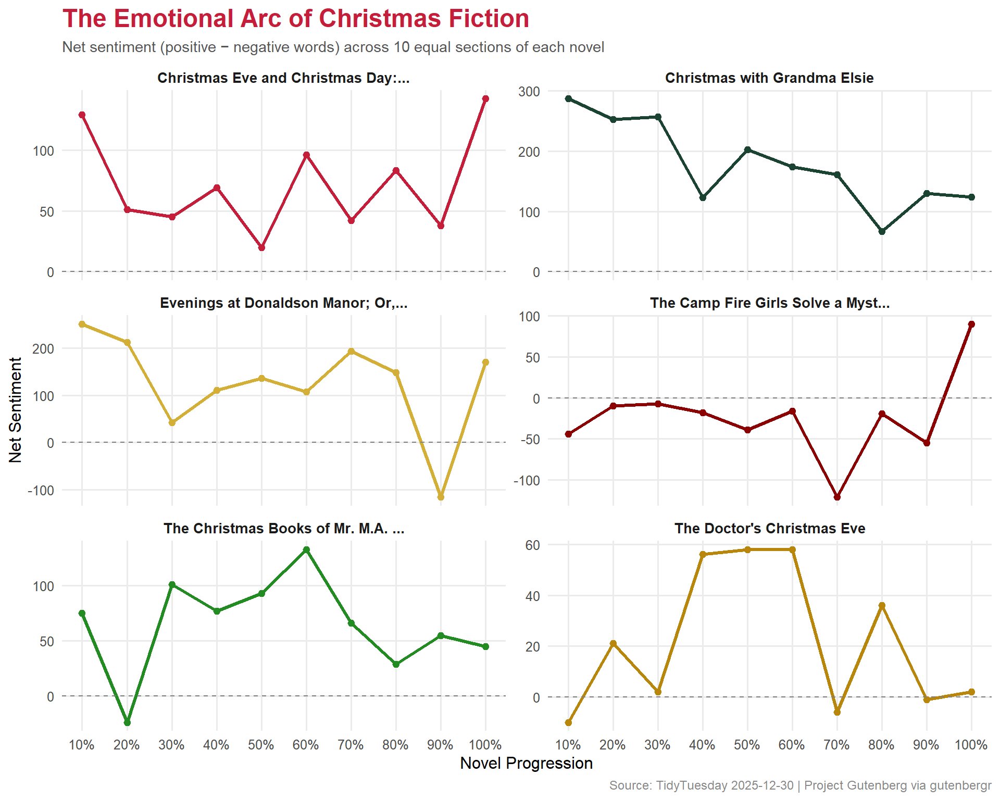

Text mining Christmas novels from Project Gutenberg — how sentiment arcs through holiday fiction, and whether ‘spirit’ or ‘santa’ wins the word count battle.
This dataset contains “Christmas” novels from Project Gutenberg, curated via the R gutenbergr package. The data includes novel metadata, author information, and full text content for analysis.
How does the frequency of “spirit” compare to “santa” across these novels?
What does the overall sentiment look like per novel?
How does sentiment change across each novel’s progression?
Loading necessary packages
My handy booster pack that allows me to install (if needed) and load my usual and favorite packages, as well as some helpful functions.
raw <- tidytuesdayR::tt_load('2025-12-30')novels <- raw$christmas_novelsauthors <- raw$christmas_novel_authorsnovel_text <- raw$christmas_novel_text
Exploratory Data Analysis
The my_skim() function is a modified version of the skimr::skim() function that returns the number of missing data points (cells as NA) as well as the inverse (e.g.: number of rows that are notNA), the count, minimum, 25%, median, 75%, max, mean, geometric mean, and standard deviation. It also generates a little ASCII histogram. Neat!
Novel Metadata
novels %>%my_skim(.)
Data summary
Name
Piped data
Number of rows
42
Number of columns
3
_______________________
Column type frequency:
character
1
numeric
2
________________________
Group variables
None
Variable type: character
skim_variable
n_missing
complete_rate
min
max
empty
n_unique
whitespace
title
0
1
17
117
0
40
0
Variable type: numeric
skim_variable
n_missing
complete_rate
n
min
p25
med
p75
max
mean
geo_mean
sd
hist
gutenberg_id
0
1
42
46
15014.25
17840
22127.75
52935
20588.79
15362.97
12032.85
▂▇▁▁▂
gutenberg_author_id
0
1
42
37
704.75
2895
5513.75
38912
4202.10
1887.63
6174.31
▇▁▁▁▁
nrow(novels)
[1] 42
authors %>%my_skim(.)
Data summary
Name
Piped data
Number of rows
35
Number of columns
6
_______________________
Column type frequency:
character
3
numeric
3
________________________
Group variables
None
Variable type: character
skim_variable
n_missing
complete_rate
min
max
empty
n_unique
whitespace
author
0
1.00
10
38
0
35
0
wikipedia
3
0.91
39
95
0
32
0
aliases
10
0.71
11
113
0
25
0
Variable type: numeric
skim_variable
n_missing
complete_rate
n
min
p25
med
p75
max
mean
geo_mean
sd
hist
gutenberg_author_id
0
1.00
35
37
1061.00
3293
5959.50
38912
4566.94
2165.03
6646.81
▇▂▁▁▁
birthdate
2
0.94
35
1803
1829.00
1859
1869.00
1891
1849.21
1849.05
24.80
▃▅▁▇▃
deathdate
3
0.91
35
1860
1907.25
1922
1937.25
1968
1919.34
1919.13
29.12
▃▃▇▇▅
# How many novels per author?novels %>%left_join(authors, by ="gutenberg_author_id") %>%count(author, sort =TRUE) %>%head(10)
# A tibble: 10 × 2
author n
<chr> <int>
1 Dalrymple, Leona 2
2 Dickens, Charles 2
3 Hughes, Rupert 2
4 Van Dyke, Henry 2
5 Wiggin, Kate Douglas Smith 2
6 Williamson, A. M. (Alice Muriel) 2
7 Williamson, C. N. (Charles Norris) 2
8 Alcott, Louisa May 1
9 Allen, James Lane 1
10 Auerbach, Berthold 1
Text Overview
# Lines per novelnovel_text %>%filter(!is.na(text)) %>%count(gutenberg_id, sort =TRUE) %>%left_join(novels, by ="gutenberg_id") %>%select(title, n) %>%head(10)
# A tibble: 10 × 2
title n
<chr> <int>
1 Evenings at Donaldson Manor; Or, The Christmas Guest 7907
2 The Christmas Books of Mr. M.A. Titmarsh 7120
3 Christmas with Grandma Elsie 6238
4 The Doctor's Christmas Eve 5771
5 Christmas Eve and Christmas Day: Ten Christmas stories 5520
6 The Camp Fire Girls Solve a Mystery; Or, The Christmas Adventure at Ca… 4869
7 The Upas Tree: A Christmas Story for all the Year 4146
8 Rosemary: A Christmas story 3512
9 Rosemary: A Christmas story 3512
10 Christmas: A Story 3355
Text Analysis
Spirit vs. Santa
The repo asks: how does the frequency of “spirit” compare to “santa”?
# A tibble: 10 × 3
title spirit_count santa_count
<chr> <int> <int>
1 "A Christmas Carol" 92 0
2 "A Christmas Carol in Prose; Being a Ghost Story of… 90 0
3 "Evenings at Donaldson Manor; Or, The Christmas Gue… 48 2
4 "The Doctor's Christmas Eve" 27 5
5 "The Thin Santa Claus: The Chicken Yard That Was a … 0 26
6 "The Christmas Angel" 19 4
7 "The Prodigal Village: A Christmas Tale" 21 2
8 "The Fairies and the Christmas Child" 14 6
9 "Christian Gellert's Last Christmas\nFrom \"German … 19 0
10 "Christmas with Grandma Elsie" 11 7
Sentiment Analysis
Using the Bing sentiment lexicon to get positive/negative sentiment per novel.
# Tokenize and join sentimentnovel_sentiment <- novel_text %>%filter(!is.na(text)) %>%unnest_tokens(word, text) %>%inner_join(get_sentiments("bing"), by ="word") %>%count(gutenberg_id, sentiment) %>%pivot_wider(names_from = sentiment, values_from = n, values_fill =0) %>%mutate(net_sentiment = positive - negative) %>%left_join(novels, by ="gutenberg_id")
Warning in inner_join(., get_sentiments("bing"), by = "word"): Detected an unexpected many-to-many relationship between `x` and `y`.
ℹ Row 41456 of `x` matches multiple rows in `y`.
ℹ Row 1236 of `y` matches multiple rows in `x`.
ℹ If a many-to-many relationship is expected, set `relationship =
"many-to-many"` to silence this warning.
# A tibble: 10 × 4
title positive negative net_sentiment
<chr> <int> <int> <int>
1 Christmas with Grandma Elsie 3179 1400 1779
2 Evenings at Donaldson Manor; Or, The Christm… 3685 2432 1253
3 Christmas Eve and Christmas Day: Ten Christm… 2015 1300 715
4 The Christmas Books of Mr. M.A. Titmarsh 3144 2494 650
5 Rosemary: A Christmas story 1548 1002 546
6 Rosemary: A Christmas story 1548 1002 546
7 Angel Unawares: A Story of Christmas Eve 962 622 340
8 Angel Unawares: A Story of Christmas Eve 962 622 340
9 The Fairies and the Christmas Child 1445 1107 338
10 The Upas Tree: A Christmas Story for all the… 1629 1339 290
Sentiment Arcs
How does sentiment change across each novel’s progression? We’ll divide each novel into 10 equal sections and track the sentiment trajectory.
# Add line numbers within each novel for position trackingsentiment_arcs <- novel_text %>%filter(!is.na(text)) %>%group_by(gutenberg_id) %>%mutate(line_num =row_number(),total_lines =n(),section =ceiling(line_num / total_lines *10)) %>%ungroup() %>%unnest_tokens(word, text) %>%inner_join(get_sentiments("bing"), by ="word") %>%count(gutenberg_id, section, sentiment) %>%pivot_wider(names_from = sentiment, values_from = n, values_fill =0) %>%mutate(net_sentiment = positive - negative) %>%left_join(novels, by ="gutenberg_id")
Warning in inner_join(., get_sentiments("bing"), by = "word"): Detected an unexpected many-to-many relationship between `x` and `y`.
ℹ Row 41456 of `x` matches multiple rows in `y`.
ℹ Row 1236 of `y` matches multiple rows in `x`.
ℹ If a many-to-many relationship is expected, set `relationship =
"many-to-many"` to silence this warning.
Warning in left_join(., novels, by = "gutenberg_id"): Detected an unexpected many-to-many relationship between `x` and `y`.
ℹ Row 191 of `x` matches multiple rows in `y`.
ℹ Row 1 of `y` matches multiple rows in `x`.
ℹ If a many-to-many relationship is expected, set `relationship =
"many-to-many"` to silence this warning.
Visualizing Christmas Sentiment
The hero plot shows sentiment arcs for the top novels, styled with a festive holiday palette.
# Holiday paletteholiday_cols <-c("#C41E3A", # christmas red"#1B4332", # evergreen"#D4AF37", # gold"#8B0000", # dark red"#228B22", # forest green"#B8860B"# dark gold)# Pick the top 6 novels by total text volumetop_novel_ids <- novel_text %>%filter(!is.na(text)) %>%count(gutenberg_id, sort =TRUE) %>%head(6) %>%pull(gutenberg_id)arc_data <- sentiment_arcs %>%filter(gutenberg_id %in% top_novel_ids) %>%mutate(short_title =str_trunc(title, 35) )ggplot(arc_data, aes(x = section, y = net_sentiment, color = short_title)) +geom_line(linewidth =1.2) +geom_point(size =2) +geom_hline(yintercept =0, linetype ="dashed", color ="gray50", linewidth =0.5) +scale_color_manual(values = holiday_cols, name =NULL) +scale_x_continuous(breaks =1:10, labels =paste0(seq(10, 100, 10), "%")) +facet_wrap(~short_title, ncol =2, scales ="free_y") +labs(title ="The Emotional Arc of Christmas Fiction",subtitle ="Net sentiment (positive \u2212 negative words) across 10 equal sections of each novel",x ="Novel Progression",y ="Net Sentiment",caption ="Source: TidyTuesday 2025-12-30 | Project Gutenberg via gutenbergr" ) +theme_minimal(base_size =12) +theme(plot.title =element_text(face ="bold", size =18, color ="#C41E3A"),plot.subtitle =element_text(size =11, color ="#555555"),plot.caption =element_text(size =9, color ="#888888"),legend.position ="none",strip.text =element_text(face ="bold", size =10),panel.grid.minor =element_blank() )

Final thoughts and takeaways
The text analysis of Christmas novels from Project Gutenberg reveals some delightful patterns. First, the “spirit vs. santa” question has a clear winner: spirit dominates overwhelmingly. This makes sense when you consider the era these novels were written — most are Victorian or early 20th century, when the “Christmas spirit” as a moral and philosophical concept was far more central to the genre than Santa Claus as a character.
The sentiment arcs are particularly revealing. Many of these novels follow a recognizable emotional pattern: they begin with relatively neutral or mixed sentiment, dip into darker territory in the middle (the protagonist’s hardship or moral failing), and then rise toward a positive resolution — the classic redemptive arc that Dickens popularized with A Christmas Carol.
Note
Bag-of-words sentiment analysis with the Bing lexicon is a blunt instrument. It catches broad emotional contours but misses irony, sarcasm, and context-dependent meaning. A sentence like “the cold, dark night gave way to warm, generous light” would score as mixed, despite being entirely positive in narrative context. More sophisticated approaches like sentence-level transformers would capture these nuances better.